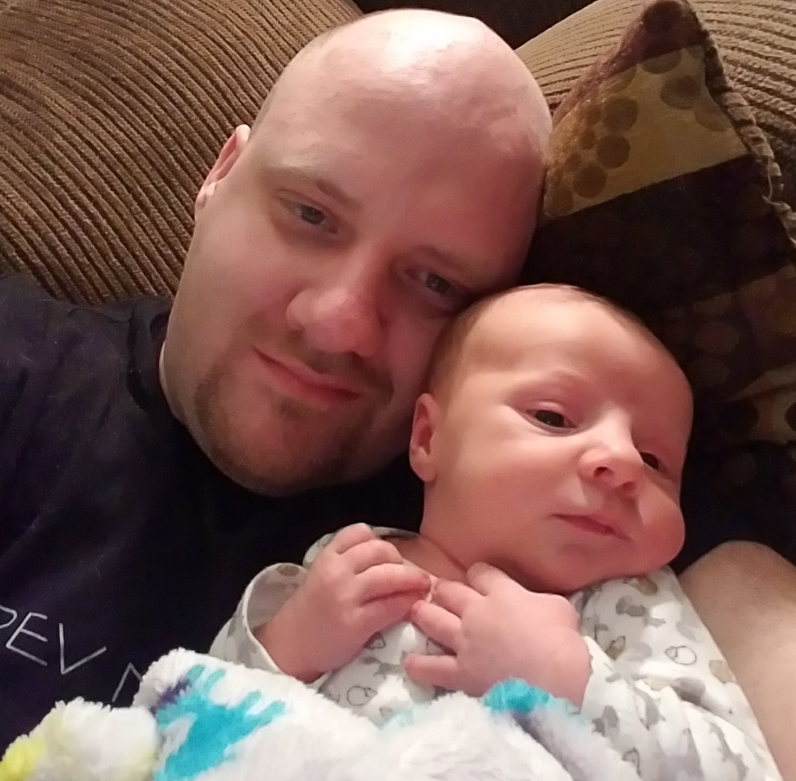

About me

My name is Zach Wight, and I was born in West Jordan, Utah, now living in Tooele, Utah. I have been married to my wife for 7 and a half years, and we have 1 son who is three months old. We currently have two dogs, my sister and her husband, and their cat living with us.
Over my time of working I have worked in Pizza (at Papa Murphy's), Massage (in private practice and at Massage Envy), in a call financial call center (Discover Financial), and at a credit union (MACU). I have been a mentor, or a manager in most of the jobs that I have had.
When I have spare time (which hasn't happened since my son was born) I play video games, love to go to movies, and watch netflix. I play the violin although I am a little rusty. Super excited about class and continue learning.